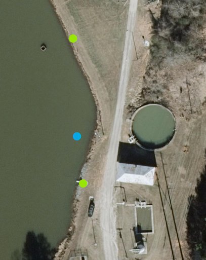
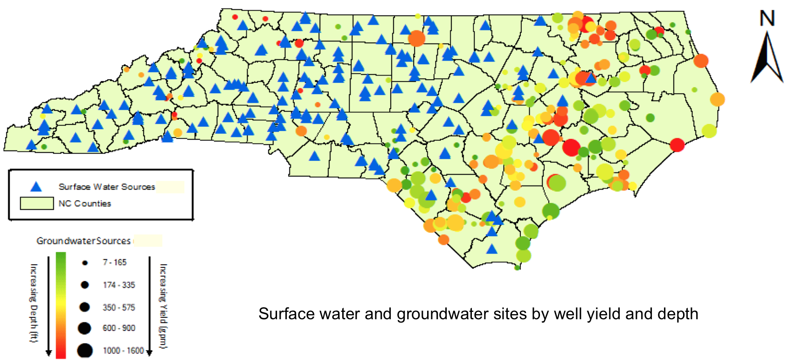
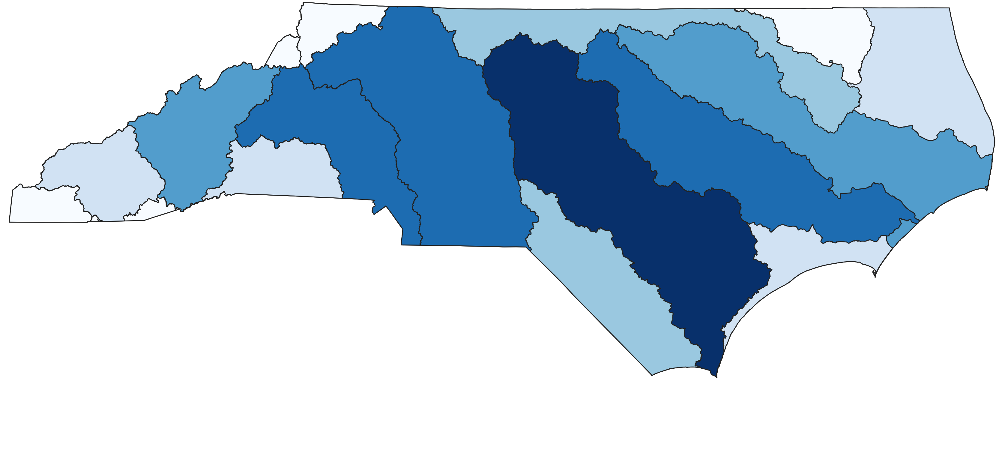

Geospatial tools for
NC PFAS Testing Network
Helena Mitasova


V. Petras, B. Baines, S. Reckling, W. Reckling, A. Petrasova


Outline
- PFAS Testing Network geospatial data overview
- Drinking water sources: water systems, sources and sampling sites
- Sampling routing tool v.net.tripplanner
- Rapid viewing of GPS data with attributes
- PFAS Testing Network on-line mapping tool prototype
- Geospatial support: Groundwater seepage through streams, agreggated landfill and wastewater data
- Future work: DEQ data, new sampling round, new analytics data layers, tools
PFAS Testing Network data management
PFAS Testing Network Data Hub: RENCI infrastructure
- RENCI: integrated database with all collected data and related workflows
- see PFAST website for the type of data collected
- NCSU CGA: support geospatial data acquisition, processing, visualization


PFAST Network geospatial data
Team 1. Public drinking water sources: 403 sites (NCSU, Duke)
PFAST Network geospatial data
Team 2. Chemours area: Groundwater seepage in streams, 24 samples (NCSU)

PFAST Network geospatial data
Team 4: Atmospheric monitoring sites: 11 sites (UNC-CH, UNC-W)
PFAST Network geospatial data
Team 5a: Landfills, waste water treatment plants: 20+ sites (NCSU)
PFAST Network geospatial data
Additional geospatial data collected:
- Team 3: residential tap water (Duke)
- Team 5b: fish, aligators (NCSU)
- DEQ ~1000 private wells
- Others ?
Integration of all PFAS data in RENCI data hub should provide a big picture of PFAS spatial and temporal distribution in North Carolina
Drinking water sources
- Municipial surface water sources: all sampled
- Multiple sources in some districts

Drinking water sources
- Groundwater wells: only one per system sampled
- Challenges indentifying the sampled well - GPS was crucial

Drinking water sources
- All public groundwater and surface drinking water sources
- Includes water sources serving small number of people
Drinking water sampled sites
- All public groundwater and surface drinking water sources
- 403 largest sources out of 8411 are sampled
Georeferencing drinking water samples
Several GPS coordinates may be associated with each drinking source- DEQ location (surface intake - blue, groundwater system - red)
- sampled water source / intake / well - green
- sampled tap

From spreadsheet to database
Duke integrates sample analysis results for Team 1 in SQLite database - each site has number of attributes, including the PFAS concentrations and GPS coordinates
Unique ID for each sample is critical for data management
Samples are matched with DEQ PWSWS data for additional variables: adress, contacts, well gw production, integration with GIS layers for further analysis

Surface water and groundwater sites by well yield and depth
Geospatial Tools
- Sampling campaign planning tool
- On-line viewer for point data
- NC PFAST Data Viewer prototype
Sampling campaign planning tool
Scheduling and routing software tool to support optimized sampling of many sites: v.net.tripplanner implemented in GRASS GIS
- travel from home to multiple sites over multiple trips
- optimize number of trips needed at average travel speed
- define maximum time per one trip, time spent at each place
- schedule can be re-optimized after additional sites are added
Sampling campaign planning tool
Example routes 21 through 25 for second campaign
planned speed 45mi/h, actual 39mi/h; time spent at site planned 30 min, actual 21 min
On-line viewing tool for point data with attributes
Preview your spreadsheet data and create maps with open source kepler.gl- name the columns with GPS coordinates as name_latitude, name_longitude
- select only "clean" data (avoid text with commas, NaN, empty cells, etc.)
- export your sheet as csv
- drop your csv file into kepler.gl (limit 250 Mb)

Color and size points by attributes
Convert to raster or heatmap
NC PFAST viewer prototype
WebGIS application based on PostGIS database, QGIS and custom tools
Developed as MGIST capstone project by Blake Baines
NC PFAST viewer prototype: display data
Display sampled sites colored by selected atribute (e.g. concentration)

Plan: make color scheme and symbology consistent with DEQ maps
NC PFAST viewer prototype: graph concentrations
Query a site, graph distribution of PFAS concentrations, display service area
Plan: make graph consistent with the reports generated by team 1 and RENCI data hub
NC PFAST viewer prototype: query data
Query selected site, show concentrations, associated service area and its attributes: population served, production capacity

NC PFAS viewer development
- Integrate with RENCI data hub and DEQ data
- Derive and add relevant data sets to support analysis and modeling:
- contributing areas for each sampling site
- map potential sources in contributing areas
- map history of landuse since 1974 and facilities
Data aggregation
Team 5a Final Report: Turning graphs into maps - Mapping aggregated release for USGS Hydrologic Units 6

Future
- Geospatial Analytics: derive relevant geospatial layers, explore spatial and temporal relationships using geostatistical modeling and machine learning to assist with understanding of sources, transport and fate
- Geospatial Simulations: scenarios, decision support, where to go from here
- Exploratory scientific visualization and public outreach data communication


Thank You!